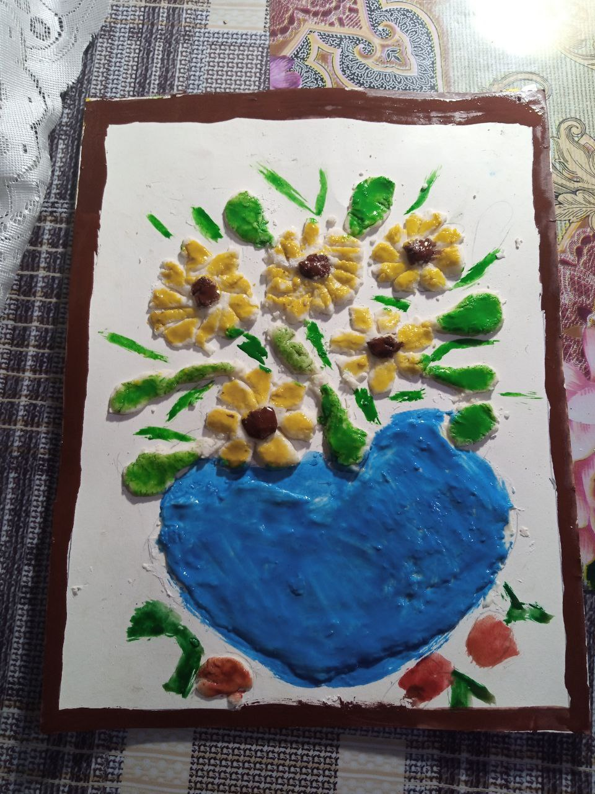
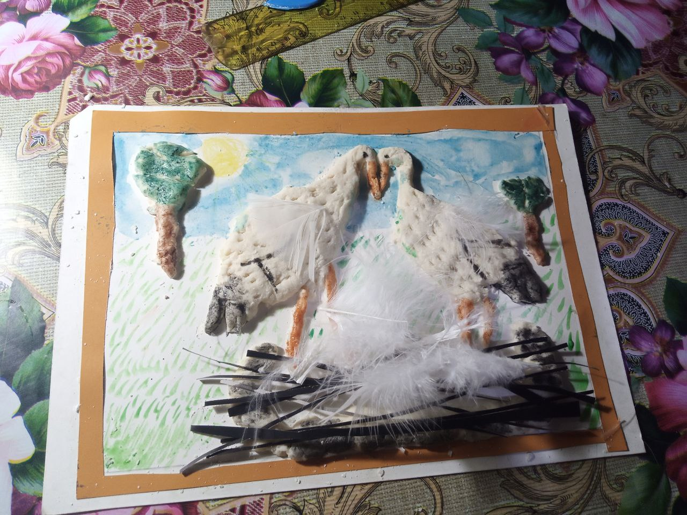
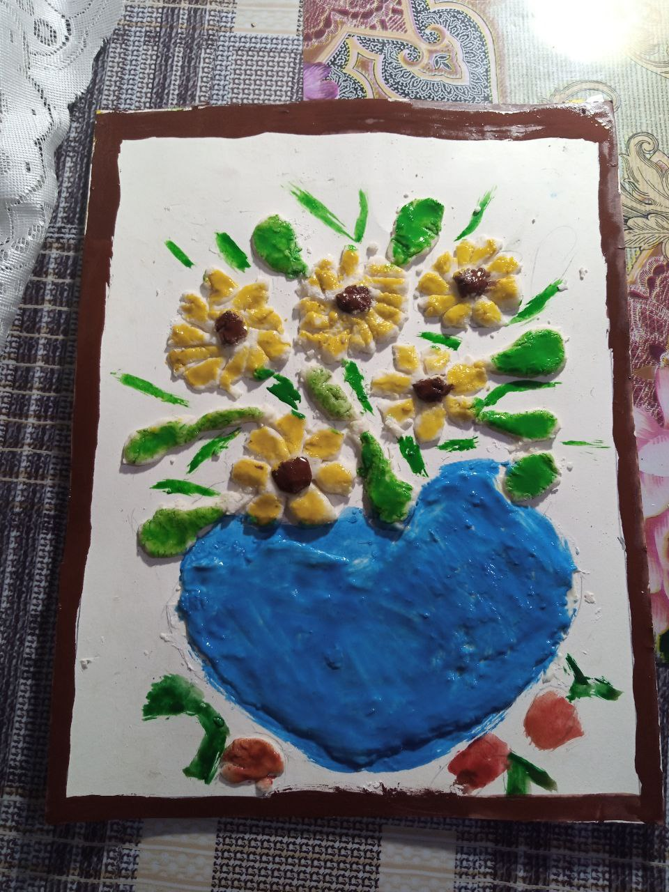
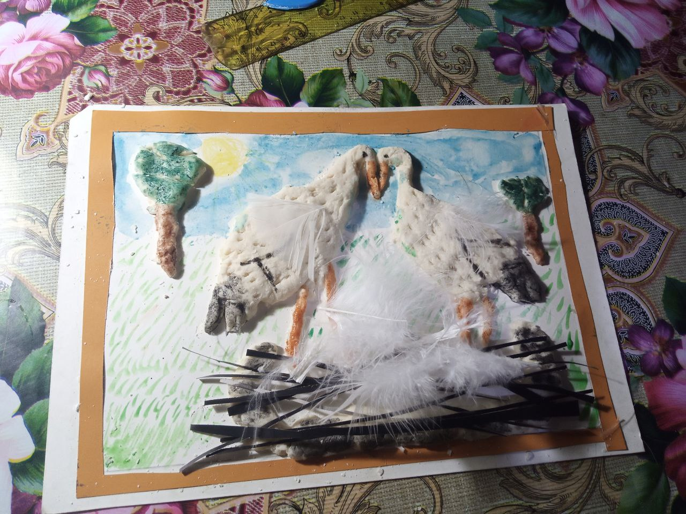

Поїздка в Батурин

Я 2 рази на літо їду в Батурин подивитися на палац Разумова
Я 2 рази на літо їду в Батурин подивитися на палац Разумова

Переваги породи: щодо мінімальний догляд, азартний характер собаки, її активність. Також пітбуль відрізняється розумом, що допомагає в його дресурі, здатність співіснувати з іншими домашніми тваринами.
 



я люблю робити вироби із солоного тіста з бабусею іх всього четверо ваза, тигр-в честь року тигра, лекики, пасхальне яйце.